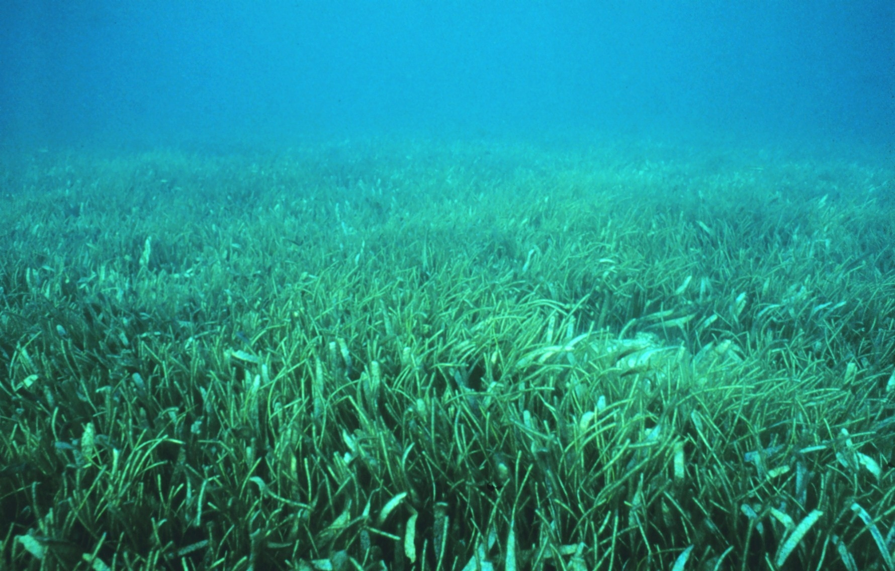
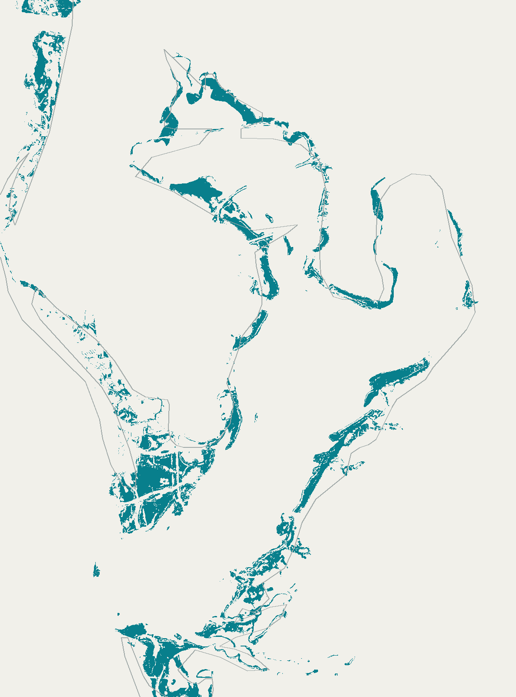
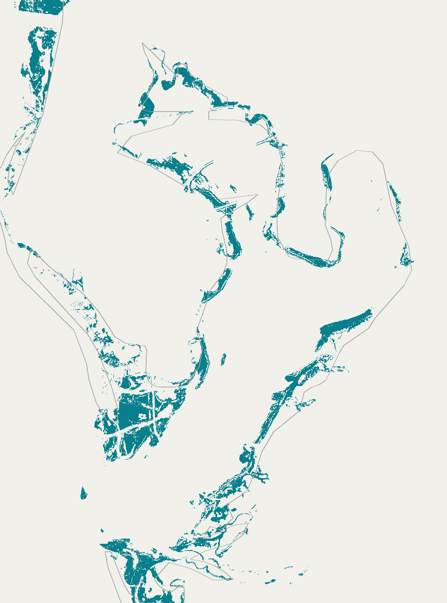
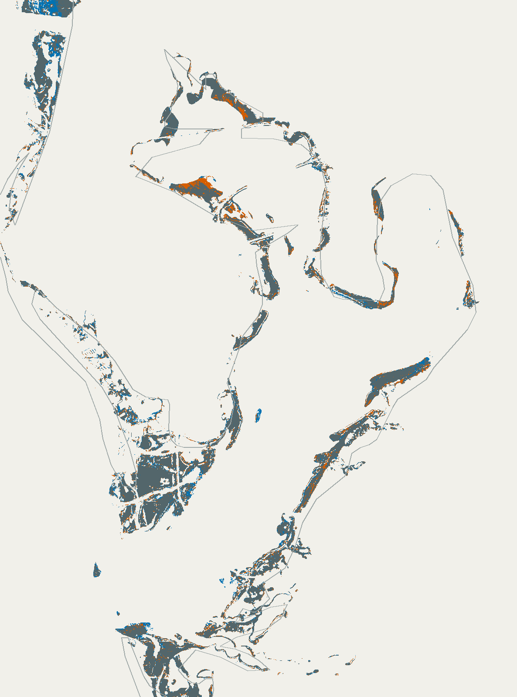

研究與資料
Peng 等（2026）的全球海草製圖研究。方法與數字依公開摘要、正式補充資料、公開推論程式，以及有版本區別的作者回覆核對。
海草有根、莖和葉，也會開花。它們形成一片片海草床。要知道這些草地是否改變，得把不同時期放回同一個位置比較。

Tampa Bay · 美國佛羅里達州



北位置與比例尺固定。留白不能直接當作沒有海草。
依 Peng 等公開資料繪製；這是分類範圍，不是衛星照片。圖片暫時沒有載入。文字與下方解說仍可閱讀。
研究以約10公尺的尺度標示海草範圍。以下是前一頁地圖中，同一小塊40×40格的放大；圖變大了，地面細節並沒有增加。
青色是該期有海草標示的格子，淺色是無資料／無標示。兩期網格一致，展示採最近鄰放大，沒有補出新分類。
這份公開圖資只有「有海草標示」與「無資料」兩種值。沒有標示的地方，可能是沒有海草，也可能是未能可靠觀測或其他背景；僅靠這份檔案分不開。
因此，橙色和藍色只表示兩期標示不同。本頁沒有把它們直接當成已確認的死亡或恢復，也沒有據此計算 Tampa Bay 的流失面積。
模型向整理好的參考標記學習，同時看周圍影像紋理、中心位置的影像特徵與推估水深。它不只是按一種綠色，就認定那裡有海草。
作者的公開程式使用 DenseNet。熱帶與溫帶各有模型，熱帶另分覆蓋較密或較疏；這不等於逐株數海草或判斷它們是否健康。
先認識海草，再固定同一海灣比較標示範圍，最後分清淨減少、覆蓋變稀與研究限制。
116 秒，無聲。可暫停、選擇段落、逐幀檢視，或在原頁面放大。
開啟「看動畫」後載入播放器，下方保留完整解說。
海草有根、莖和葉，會開花，和海藻不同。本研究從衛星資料辨認整片海草床的分布，不是逐株計數。
研究用約10公尺的網格標示海草範圍。動畫把原資料的40×40格放大，沒有補出新細節，也不會因此辨認每株海草或每片葉子。這張圖的原生網格使用角度座標，實際地面大小隨緯度而變；不能直接用每格100平方公尺換算地方流失面積。
研究比較2019–2020與2023–2024。這裡把Tampa Bay兩期公開資料以相同範圍、方向與網格呈現。0被資料標為NoData，無法區分可靠的非海草、未觀測和被遮蔽的地方。因此只顯示各期有海草標示的範圍，不將留白宣稱為已確認的消失。
公開程式使用DenseNet，將周圍20×20像素影像窗、中心位置的影像特徵與推估水深一起用於分類。熱帶與溫帶使用不同模型，熱帶另分密集／稀疏覆蓋。研究另用獨立資料評估，不是本動畫重新運算。
作者報告兩期海草總面積淨減少約5,969平方公里；另有約6,221平方公里的熱帶海草從密集覆蓋轉為稀疏。淨減少已扣掉新增；轉疏沒有扣除變密，兩者不能相加當作完全消失面積。
正式Supplementary Table 3有9,383筆評估紀錄，整體分類正確率約85%。參考中的海草被找出的比例約76.5%；地圖標成海草的紀錄中，約93.2%和參考相符。兩者分母不同，均不能當作某個位置或兩期變化的正確機率。
兩期地圖可以整理標示範圍差異；真正的海草狀況與改變原因，仍要結合其他觀測。研究適用範圍是可判讀的清澈淺海，不是所有水質和深度的完整普查。
作者比較2019–2020與2023–2024，報告海草總面積淨減少，熱帶也有部分海草床由密集轉為稀疏。這兩個數字描述不同變化。
減少的面積，扣除新增的面積，才是淨減少。這不是所有消失斑塊的面積總和。
兩期淨減少 · 作者報告值
海草仍在，但覆蓋程度變了。這個數字只計算轉疏，沒有扣掉另一方向變密的面積。
熱帶單方向轉疏 · 作者報告值
兩者不能相加成「完全消失的海草面積」。
Peng 等（2026）。適用範圍是可判讀的清澈淺海；不是逐年固定減少，也不是本頁對 Tampa Bay 重新計算的結果。
| 看哪一件事 | 表中結果 |
|---|---|
| 參考中的海草，有多少被地圖找出來？ | 76.5% |
| 地圖標成海草的紀錄，有多少和參考相符？ | 93.2% |
| 海草與非海草合計，分類有多少和參考一致？ | 約85% |
這些比例的分母不同，不能只挑93.2%稱為「AI準確率」。它們描述這組資料的分類表現，不能直接當作某一格、或兩期變化的正確機率。
表中的95%信賴區間依序為75.6–77.4%、92.5–93.6%、84.1–86.2%。本頁核對原矩陣的加總與比例，沒有重新驗證模型，也未將這9,383筆直接等同另一組目視判讀樣本。
兩期地圖可以提示哪些地方值得複查。是否真的消失、為什麼改變，仍要結合水質、潮位、現地調查或其他資料；不能只靠圖的顏色判定原因。
水深、混濁、觀測條件和分類誤差都會影響判讀。研究沒有完整普查所有深度與水質的海草，也不能單靠這兩期資料描述每一年的變化。
Peng 等（2026）的全球海草製圖研究。方法與數字依公開摘要、正式補充資料、公開推論程式，以及有版本區別的作者回覆核對。
Florida Keys的海草實拍由 Heather Dine／NOAA Photo Library 提供，依 CC BY 2.0 保留署名；照片原始來源。它不是 Tampa Bay 的前後紀錄。
地圖由作者公開資料的同一區域繪製，粗略海岸線只協助定位。本頁沒有把無資料補成非海草，沒有計算新的地方流失面積，也沒有執行分類模型。